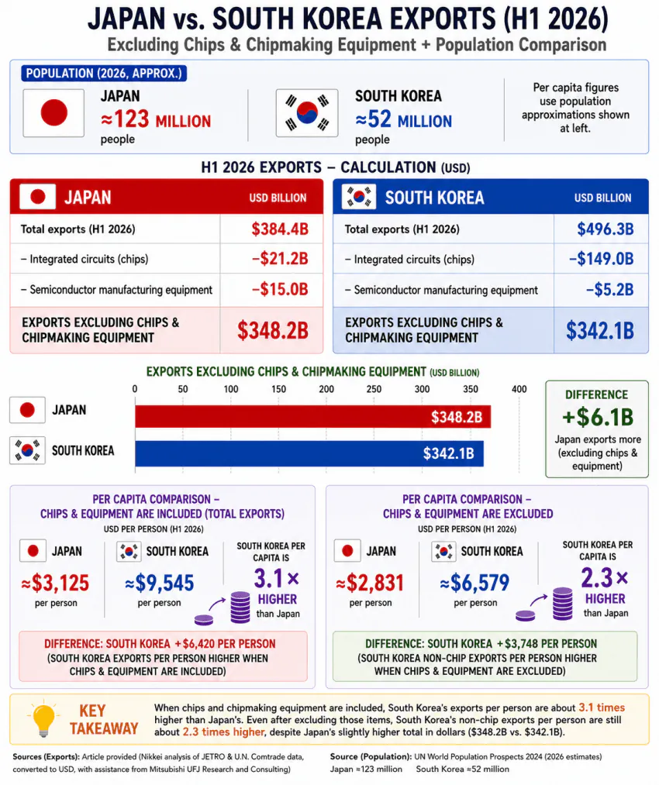

반도체 빼야 일본이랑 비슷함

반도체 빼야 일본이랑 비슷함
김구선생님 보고 계십니까?
지금 잘 나갈 때 서서히 미래에 대한 대비를 해둬야 일본과 같은 전철을 안밟음
산업구조나 사회구조 개혁을 추진하기 좋은 때 같아
이럴 때일수록 선구안을 가진 인물들이 큰 그림을 그렸으면 좋겠어
그래서 갠적으로 지금 여유세금 걷히는걸로 돈뿌리기 이런거 하지말고 싹다 rnd, 교육, 과학쪽에 써야한다 생각함
이건 그냥 일본이 좆된거 아니냐
우리가 잘 된 동시에 일본이 잃어버린 30년임 ㅋㅋㅋ
우소다!
우리나라만큼 만능인 나라 없음
반도체, 자동차, 조선, 방산, 원전, 석유화학, 정유, 2차전지, 전력, 의료 등 주요 산업들에서 전부 세계 탑티어급 경쟁력을 가진 미친나라
이런 경쟁력을 가진 국민을 노예 부리듯이 굴린 좆선
경쟁력 가진 국민을 갈아넣어서 포트폴리오가 화려한거임
ㄹㅇㅋㅋ 잘 모르는 애들은 우리나라 반도체 원툴인줄 암 우리나라처럼 다방면으로 잘 나가는 나라 거의 없지
문화예술도 뒤쳐지지 않고 일부 분야는 선도중인게 미친거긴 함..
와..옛날엔 진짜 일본 멀어보였는데 이런 날이 오네
머 수출하는거야 김?
크읔 이샛기 김도 중요자산이기하지
뭘 어디다 이렇게 많이 파는거지 ㅋㅋ
반도체가 뇌랑 심장인데 뗴고도 비빈다고? 시발 어케한건데 ㅋㅋㅋ
역시 낙수효과는 실존했어
열등 잽들은 인류 유전자풀 개선을 위해 인종청소가 정답 ㅋㅋ
와, 나중에는 일본애들이 외국가서
두유노 오타니? 아스카 키라라? 하는 거 아닌가 ㄷㄷ
반도체 원자재도 뺀거보니 일본쪽에서도 많이 빠진거 같음.
어디발 자료여
내수가 별로라서 양극화 심하다는건 인과관계라고 하기 힘듬. 내수가 잘 돌아가는 국가들이 양극화 더 심한 경우 많음. 그리고 심하다는 양극화도 진짜 심한 나라들에 비하면 좀 엄살이고
오히려 양극화가 안 심해서 피부로 느끼는 박탈감이 큰 편이 아닐까 싶음
반도체 뜨기 전에도 일본을 GDP 에서 따라 잡았느니 마니 했으니까..
우리야 그렇다고 치고 일본은 나름 세계 4위권 아니었냐
일본 우익: "테다라메다!!!! 우소다아!!"